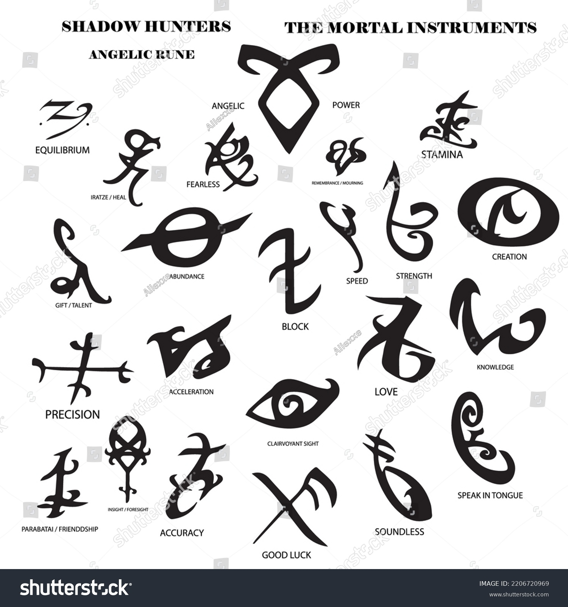

ShadowHunters-The Mortal Instruments
The City Of Bones


Clary Fray, a teenager, discovers she is part of the Shadowhunter world when she witnesses a supernatural murder in a nightclub—visible only to her. Soon, her mother is kidnapped by Valentine, a rogue Shadowhunter seeking the powerful Mortal Cup. Clary joins forces with Shadowhunters Jace, Alec, and Isabelle to uncover the truth about her identity and find the artifact. Along the way, she realizes her mother had hidden her heritage to protect her.
As Clary learns to navigate this new world of demons, vampires, and werewolves, she uncovers shocking family secrets, including that Valentine is her father. The search for the Mortal Cup becomes a race against time, filled with danger, betrayal, and unexpected alliances. The book climaxes with a dramatic confrontation where Clary discovers her newfound powers, setting the stage for further adventures.
The City of Ashes


p>Following the events of City of Bones, Clary Fray struggles with the revelation that Jace is her brother and Valentine is their father. The Mortal Cup remains with the Shadowhunters, but Valentine begins his hunt for the second of the Mortal Instruments—the Mortal Sword—using it to summon demons and consolidate power. Meanwhile, Clary tries to navigate her feelings for Jace, her growing relationship with Simon, and her search for her kidnapped mother.The stakes escalate as Valentine’s plan threatens the Shadowhunter world, leading Clary, Jace, and their friends to confront him in a deadly battle. Clary discovers her unique ability to create powerful runes, which becomes crucial in their fight. The book ends on a dramatic note, with Valentine gaining control of the Mortal Sword, setting the stage for an even greater showdown in the next installment.